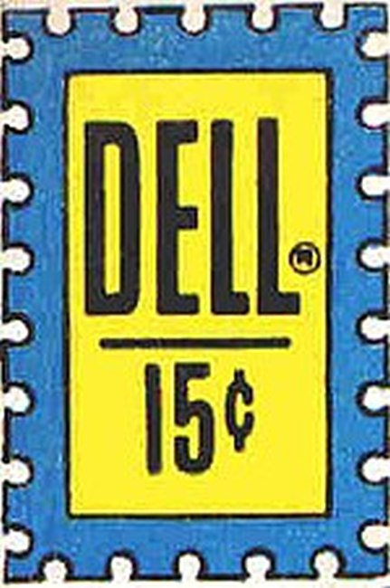

Dell Comics was the comic book publishing arm of Dell Publishing, which got its start in pulp magazines. It published comics from 1929 to 1974. At its peak, it was the most prominent and successful American company in the medium. In 1953 Dell claimed to be the world's largest comics publisher, selling 26 million copies each month. Its first title was The Funnies (1929), described by the Library of Congress as "a short-lived newspaper tabloid insert" rather than a comic book. Comics historian Ron Goulart describes the 16-page, four-color, newsprint periodical as "more a Sunday comic section without the rest of the newspaper than a true comic book. But it did offer all original material and was sold on newsstands". It ran 36 weekly issues, published Saturdays from January 16, 1929, to October 16, 1930.
In 1933, Dell collaborated with Eastern Color Printing to publish the 36-page Famous Funnies: A Carnival of Comics, considered by historians the first true American comic book; Goulart, for example, calls it "the cornerstone for one of the most lucrative branches of magazine publishing". It was distributed through the Woolworth's department store chain, though it is unclear whether it was sold or given away; the cover displays no price, but Goulart refers, either metaphorically or literally, to the publisher "sticking a ten-cent pricetag on the comic books". In early 1934, Dell published the single-issue Famous Funnies: Series 1, also printed by Eastern Color. Unlike its predecessor, it was intended from the start to be sold rather than given away.
Dell Comics was best known for its licensed material, most notably the animated characters from Walt Disney Productions, Warner Bros., Metro-Goldwyn-Mayer, and Walter Lantz Studio, along with many movie and television properties such as the Lone Ranger, Tarzan, Felix the Cat, Howdy Doody, Yogi Bear and other Hanna-Barbera characters.
Titles
1000 Jokes (116 issues, 1938–1969)
Animal Comics (30 issues, 1942–1947)
Beach Blanket Bingo (1965)
Ben Casey (1962–1964)
Brain Boy (5 issues, 1962–1963)
Brave Eagle (see TV Series Brave Eagle)
Burke's Law
Campus Clowns
The Cisco Kid (41 issues, 1950–1958)
Combat (40 issues)
Crackajack Funnies (43 issues, 1938–1942)
Deadwood Gulch
Dr. Kildare (1962–1965)
Dracula (3 issues, 1966–1967)
Edgar Rice Burroughs' Tarzan (131 issues, 1948–1962) — later continued by Western, et al.
Four Color (1,354 issues, 1938–1968)
Frankenstein (3 issues, 1966–1967)
The Funnies (36 issues, 1929–1930)
Gene Autry Comics / Gene Autry and Champion (121 issues, 1946–1959)
Get Smart
Ghost Stories (37 issues, #1 only written by John Stanley)
Idaho (8 issues, 1963-1965)
Jungle War Stories (11 issues 1962-1966) retitled Guerilla War in 1965 (issues 12–14 March 1966)
Kona, Monarch of Monster Isle (20 issues, 1962–1964)
Little Lulu (164 issues, 1948–1962) — later continued by Western, et al.
The Lone Ranger (145 issues, 1948–1962) — later continued by Gold Key
The Lone Ranger's Famous Horse Hi-Yo Silver (34 issues, 1952–1960)
Looney Tunes and Merrie Melodies Comics (153 issues, 1941–1954)
Mission: Impossible (5 issues)
Naza Stone Age Warrior (9 issues)
New Funnies (288 issues, 1942–1962)
Neutro (1 issue)
Nukla (4 issues, 1965–1966)
Popular Comics (145 issues, 1936–1948)
Possum Holler
Ponytail (20 issues)
Red Ryder (151 issues, 1941–1956)
Rock-Age Roy
Sancho and the Don
Sea Hunt
Super Comics (121 issues, 1938–1949)
Super Heroes (1967, starred the "Fab 4")
Tales of the Green Beret (5 issues, 1967-1969)
Thirteen Going on Eighteen (29 issues, written by John Stanley)
Toka the Jungle King (10 issues)
Tom & Jerry Comics (153 issues, 1949–1962)
Turok, Son of Stone (130 issues, 1956–1982)
Walt Disney's Comics and Stories (264 issues, 1940–1962) — continued by Western, et al.
Werewolf (1966–1967)
Yak Yak (early 1960s satirical comic principally drawn by artist Jack Davis)